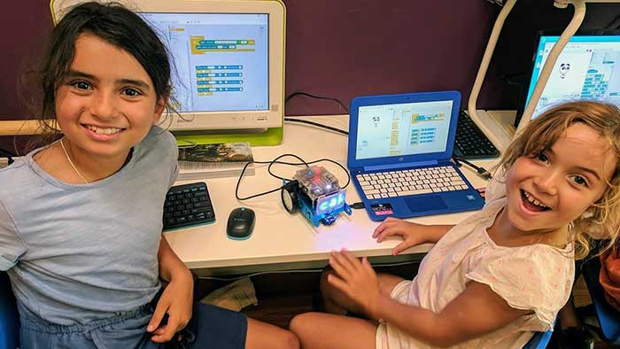

Kids
Creative technology for children who like making things.
Games, robots, electronics, digital worlds and more. Beginners get help getting started. Children with experience get room to take an idea further.


Who?
Children aged 7–12, from complete beginners to experienced young makers.
Some children arrive having never written a line of code. Others have been making games, experimenting with electronics or teaching themselves new things for years.
We don't expect everyone to know the same things or work on the same projects. We find a starting point that suits each child and help them move forward from there.
What?
Coding, AI, games, electronics, robotics, physical computing, websites, interactive projects and design.
Children might program a game, build a robot, create an interactive story, design a website or make something respond to light, sound or movement.
We work with tools including Scratch, Python, JavaScript, Raspberry Pi, microcontrollers, sensors and plenty of things with wires.
Projects change as technology changes, and as children's interests and abilities develop.
The technology is the toolbox. The project is the reason to use it.
Why?
Making gives learning a reason. Understanding what you're doing gives you more say in what happens next.
It's one thing to follow instructions and get something working. It's another to understand how it works, change it, improve it or make something entirely your own.
Children learn coding, logic, design and problem-solving through projects that give those skills a purpose.
We want them to become confident enough to ask, “What happens if I try this?” And curious enough to find out.
How?
Small groups, useful guidance, real projects and gradually more independence.
Beginners get clear instructions, practical help and something they can make work. As their skills grow, they make more of the decisions.
Sometimes everyone begins with the same project. Sometimes children work on completely different things.
Our small groups mean we can help when somebody gets stuck, notice when they're ready for something harder and give them space to work things out for themselves.
The aim isn't to follow instructions forever.
Where?
Upstairs in Marrickville, Sydney.
Our creative technology studio is at Level 1, 230 Marrickville Road. It's a working space full of computers, electronics, robots, tools, materials and projects in various stages of becoming something.
We provide the equipment. Children bring their curiosity.
When?

Explore

Find the lab
Level 1230 Marrickville Road
Marrickville NSW 2204